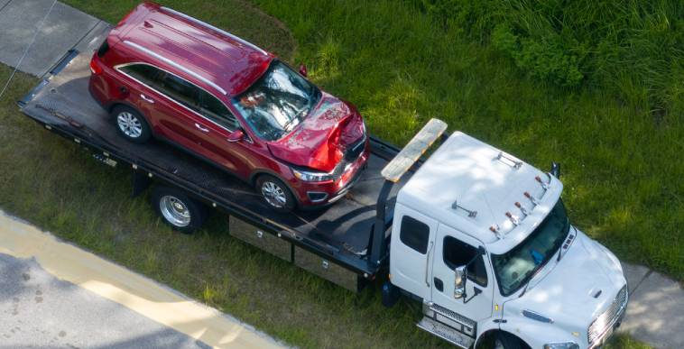
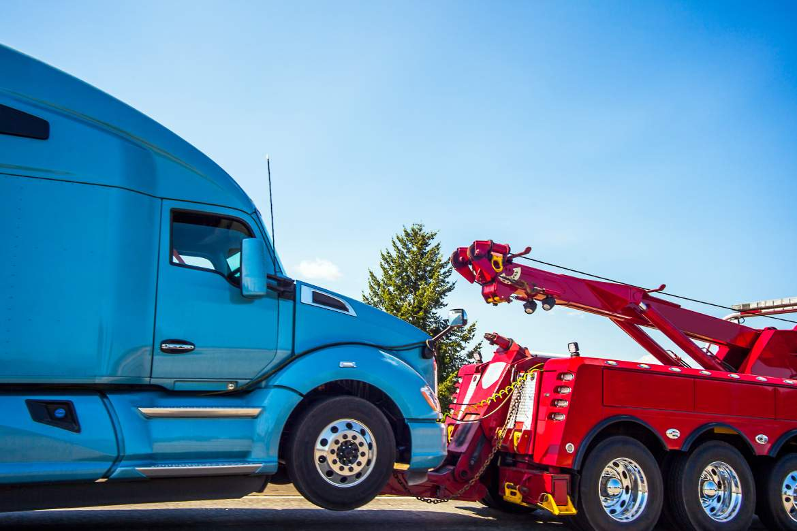
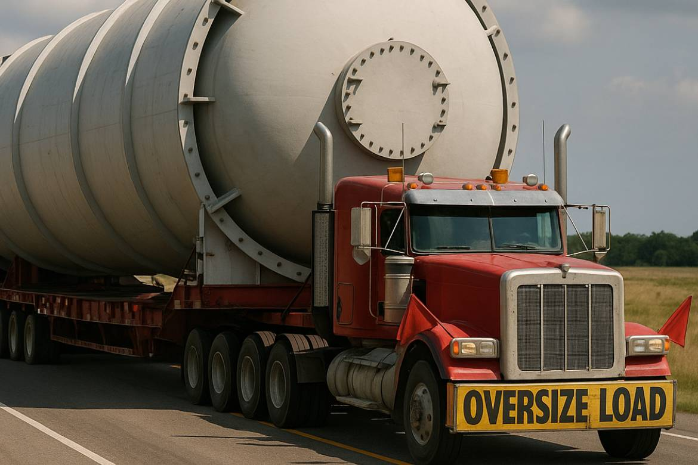

Roadside Assistance
Flats, jumpstarts, fuel delivery, lock-outs — coordinated for you
We coordinate fast, courteous, and affordable roadside assistance services throughout New Mexico. Gallup Towing is a dispatch and coordination service — we are not a direct towing company and do not operate our own trucks or equipment. When you call us, we connect you with a trusted, licensed local provider who can reach you quickly and safely, no matter the situation. Whether you're stranded on I-40, I-25, or a remote stretch of highway, we dispatch local professionals 24/7 for common roadside emergencies including flat tire changes, dead battery jumpstarts, emergency fuel delivery, and vehicle lock-out assistance. All physical services are performed by independent, third-party operators in our network. We handle the coordination and payment so you get fast, reliable help without the hassle of tracking someone down yourself.
- Quick Tire Changes
- Swift Jump Starts
- Fuel Deliveries
- Vehicle Lock-Outs
- Available 24 hours a day, 7 days a week
Light Duty
Light Duty Towing Coordination
Gallup Towing coordinates professional light-duty towing services across New Mexico, connecting you with local providers who safely transport cars, SUVs, pickup trucks, motorcycles, and small vans whenever and wherever they're needed. The independent operators in our network use modern flatbed tow trucks and wheel-lift systems to handle everything from local moves within Gallup to long-distance tows across the state — whether after a breakdown on I-25, a crash on I-40, or simply relocating a vehicle to a repair shop. Available 24/7 with quick dispatch response times, we connect you with providers who perform every light-duty tow with care, using soft straps, proper securement, and damage-free techniques that protect your vehicle's finish, wheels, and drivetrain. Affordable, fully insured, and trusted by New Mexico drivers, we make light-duty towing coordination fast, reliable, and stress-free from Gallup to Farmington, Las Cruces to Raton, and everywhere in between.
- Light-duty towing coordination throughout New Mexico
- Providers are fully insured with affordable rates
- 24/7 dispatch availability with fast response times
- Cars, SUVs, pickup trucks, motorcycles, and small vans


Heavy Duty
Heavy Duty Towing Coordination
Gallup Towing coordinates expert heavy-duty towing services anywhere in New Mexico, connecting you with local providers who handle everything from box trucks, delivery vans, and buses to motorhomes, RVs, large equipment haulers, and semi-trucks. The operators in our network are equipped with heavy-duty rotators, lowboy trailers, landoll trailers, and air-cushion recovery units, and their certified crews can safely recover and transport even the largest vehicles after rollovers, off-road incidents, or mechanical failures on interstates or remote routes. Available 24/7 with rapid dispatch, we serve the entire state — including I-40, I-25, I-10, and rural highways — coordinating winching, load shifts, decking/undecking, and long-haul heavy transport to businesses or terminals. All providers in our network are fully licensed and insured, making Gallup Towing the trusted dispatch choice for commercial fleets, trucking companies, and individual operators who need fast, professional heavy-duty towing and recovery across New Mexico.
- Trusted by trucking companies, fleets, and individual owners statewide
- 24/7 emergency dispatch with fast response
- Handles box trucks, buses, RVs, motorhomes, semis, and heavy equipment
- Expert heavy-duty towing coordination across all of New Mexico
Oversize Loads
Large Oversize Transportation Coordination
Gallup Towing coordinates professional, fully permitted oversize and overweight load transportation services across New Mexico and beyond, connecting you with licensed carriers for the safe and compliant delivery of the state's biggest cargo. From bulldozers, cranes, and transformers to wind blades, modular homes, and drilling rigs, the specialized carriers in our network operate steerable multi-axle lowboys, RGNs, perimeter-frame trailers, and heavy-haul tractors — handling loads that exceed standard legal limits in length, width, height, or weight. We coordinate permitting through New Mexico DOT and local authorities, and work with certified pilot car drivers and route survey professionals to guarantee smooth passage on I-40, I-25, US-54, or remote back roads. Operating 24/7 with night and weekend availability, Gallup Towing dispatches carriers to oilfields near Carlsbad, wind farms near La Joya, construction projects in Santa Fe, and mines near Silver City — always on schedule, fully insured, with an unmatched safety record that keeps New Mexico's industries moving.
- On-time delivery with perfect safety record
- 24/7 availability, including night moves & weekends
- Coordinates cranes, excavators, wind blades, transformers, modular homes, drilling rigs & more
- Network carriers operate multi-axle lowboys, RGNs, extendables, perimeter trailers, and heavy-haul tractors

I can't say enough good things about Gallup Towing! We were stranded on the highway with a broken trailer tire, and they came to us in less than an hour. Russell met us on the spot and quickly fixed the tire and getting us back on the road. Their service was not only efficient but also very affordable, which was a huge relief. If you're ever in a pinch, Gallup Towing is the place to call. Highly recommended for their outstanding service and professionalism!
- Number of our offices
General FAQ'S
Common questions about our dispatch service
GALLUP TOWING All Rights Reserved Gallup Towing © 2026